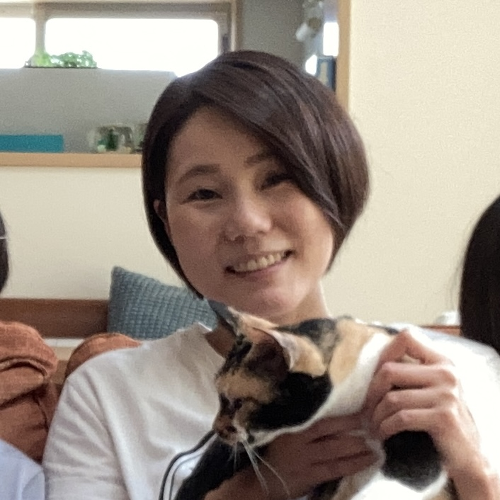

Portfolio of Eriko Takamura
高村 絵里子
自己紹介
美術短大で培った「見せ方」の感覚を活かし、見やすく・使いやすいUI設計にこだわった開発を行っています。
2024年からは、実務に近い形式で学べるエンジニア養成ブートキャンプ Ms.Engineer にて約8ヶ月間学習。
フロントエンド・バックエンドの両面から開発に取り組み、チーム開発やAPI設計なども経験しました。
コードを書くことに加え、ユーザー視点での設計・レイアウト・配色など、UI/UXの体験向上にも情熱を注いでいます。
今後は、UIデザインとフロントエンド実装の橋渡しができるエンジニアを目指しています。
プロフィール
神奈川県出身。長年の接客経験を経てIT業界に挑戦。
趣味：ハンドメイド（アクセサリーなど）、工作
スキルセット
- フロントエンド：Next.js、React、Tailwind CSS
- バックエンド：Python（FastAPI）、SQLAlchemy、Alembic、PostgreSQL
- UI設計：Figma、HTML/CSS
- ツール：GitHub、Postman、Docker（学習中）、VSCode
プロジェクト紹介
HealthyBloom - 主婦向け健康管理サポートアプリ
健康診断データをもとに、1週間分の栄養バランスを考慮した食事メニューを提案するWebアプリです。
私は主に、「レシピ自動提案APIの連携」と「UIの見やすさ・使いやすさの設計」を担当しました。
本プロジェクトではFigmaのようなUI設計ツールは使用せず、V0（UI生成ツール）やAIの提案を参考にしながら、
実際に画面を動かして試行錯誤を重ね、視認性や構成にこだわって調整・実装を行いました。
- FastAPIによるレシピ提案APIの連携・出力整形
- 健康診断結果から栄養タイプを判定し、1週間分の献立を自動生成
- 朝昼晩の区切り表示や、栄養素別ラベルの色分けなどUI面を工夫
- 主婦ユーザーの視点を意識した直感的な構成・レイアウト設計
使用技術：FastAPI / Next.js / Tailwind CSS / PostgreSQL / Postman
GitHub： プロジェクトを見る
職歴の要約
約20年間にわたり、接客・事務・軽作業など多様な業務に従事。
特に「人との関わり」や「正確さ」が求められる場面で信頼を積み重ねてきました。
子育てを経て、2024年よりIT分野へ転身。
職歴詳細
- 2000年 - 平安レイサービス株式会社（フロント・インフォメーション）
- 2003年 - 八重椿本舗（化粧品製造・検品）
- 2003年 - リテイルネットワークス株式会社 ディズニーストア（総務）
- 2005年 - 有限会社湘南七宝焼（販売・接客）
- 2007年 - 株式会社エムテック（建設業関連書類・図面編集）
- 2018年 - 平塚市役所（マイナンバーカード交付窓口）
- 2022年 - 株式会社シンメイ商事（乳製品の配送）
今後の目標
異業種からの挑戦でITの奥深さと楽しさを知りました。
今後は、UI/UX設計とフロントエンド実装の両面を磨きながら、
ユーザーの心に届くようなサービスを形にできるエンジニアを目指します。